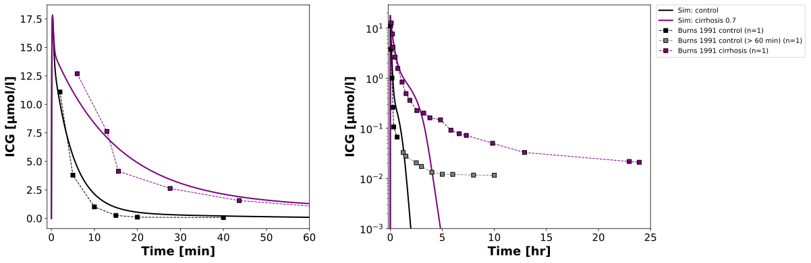
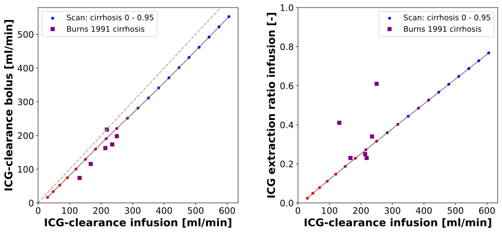

Overview
Models
| model | source |
|---|---|
| model | icg_body_flat.xml |
Datasets
| dataset | file |
|---|---|
| Fig2_healthy | datasets/Burns1991_Fig2_healthy.tsv |
| Fig2_healthy_tail | datasets/Burns1991_Fig2_healthy_tail.tsv |
| Fig3_cirrhotic | datasets/Burns1991_Fig3_cirrhotic.tsv |
| Fig1_Tab1_patients | datasets/Burns1991_Fig1_Tab1_patients.tsv |
Figures (2)




Code
"""Simulation experiment of the study Burns1991."""
from typing import ClassVar, override
import matplotlib.pyplot as plt
import numpy as np
import pandas as pd
from pkpdsim.metadata import (
ApplicationForm,
DataType,
Dosing,
Fasting,
Health,
PKPDData,
PKPDMappingMetaData,
Route,
Tissue,
)
from pkpdsim.scan import end_values
from sbmlsim import Q
from sbmlsim.data import DataSet
from sbmlsim.fit import FitData, FitMapping
from sbmlsim.plot import Figure
from sbmlsim.plot.serialization_matplotlib import FigureMPL
from sbmlsim.simulation import Dimension, Scan, Simulation
from pkdb_models.models.icg.experiments.base_experiment import ICGSimulationExperiment
from pkdb_models.models.icg.experiments.fig_templates import scan_color
from pkdb_models.models.icg.icg_pk import summarize
class Burns1991(ICGSimulationExperiment):
"""Simulation experiment of Burns1991.
Experiment 2: timecourses of indocyanine green in the venous plasma of a
representative healthy subject (Fig 2, 10 h) and a representative patient
with cirrhosis (Fig 3, 24 h) after an intravenous bolus of 0.5 mg/kg,
measured by HPLC (limit of quantification 5 ng/ml). The digitized times of
the steep phase of Fig 2 cannot be resolved on its axis of 600 min; the
points are at the sampling times of the protocol (0, 2, 5, 10, 15, 20, 25,
30, 40, 50, 60, 75, 90, 105, 120, 150, 180 min, 4, 5, 6, 8, 10 h). The
data of the first hour are the plasma disappearance, the tail after 60 min
(0.01 - 0.05 µg/ml, close to the limit of quantification) is the slow
secondary phase, a limitation of the model. The patient with cirrhosis is
simulated with a degree of cirrhosis of 0.7 (tissue loss and shunts); body
weight and fasting are not reported, the model's 75 kg are used.
Experiment 1: in 6 other patients with biopsy-proven cirrhosis an infusion
of 0.25 mg/min after a bolus of 5 mg to steady state (paired peripheral and
hepatic venous samples every 10 min), the clearance the infusion rate over
the peripheral concentration and the extraction ratio (Table 1); 2 - 14
days later a bolus of 0.5 mg/kg with 2 h of samples, the clearance the dose
over the area to infinity (Fig 1). Simulated as scans of the degree of
cirrhosis of both protocols: the clearance of the bolus against the
clearance of the infusion, and the extraction ratio against the clearance
of the infusion. The peripheral vein of the contralateral arm is taken as
the arterial plasma at steady state (`ER_icg`).
"""
#: the degree of cirrhosis of the representative patient
f_cirrhosis: ClassVar[float] = 0.7
#: the end of the plasma disappearance in the timecourse of Fig 2 [min]
tail_start: ClassVar[float] = 60.0
#: the infusion of experiment 1: the bolus [mg], the rate [mg/min] and the
#: duration [min]
infusion: ClassVar[tuple[float, float, float]] = (5.0, 0.25, 180.0)
#: the duration of the samples of the bolus of experiment 1 [min]
bolus_end: ClassVar[float] = 120.0
@override
def datasets(self) -> dict[str, DataSet]:
dsets: dict[str, DataSet] = {}
# timecourses of the representative subjects
df = self.load_dataframe("Fig2")
for key, rows in [
("Fig2_healthy", df[df.time <= self.tail_start]),
("Fig2_healthy_tail", df[df.time > self.tail_start]),
]:
dset = DataSet.from_df(rows, self.ureg)
dset.unit_conversion("value", 1 / self.Mr.icg)
dsets[key] = dset
dset = DataSet.from_df(self.load_dataframe("Fig3"), self.ureg)
dset.unit_conversion("value", 1 / self.Mr.icg)
dsets["Fig3_cirrhotic"] = dset
# experiment 1: the clearances of the bolus and of the infusion (Fig 1)
# and the extraction ratio of the infusion (Table 1) of every patient
df_fig1 = self.load_dataframe("Fig1")
df_tab1 = self.load_dataframe("Tab1")
df_er = df_tab1[
(df_tab1.measurement_type == "extraction_ratio")
& df_tab1.intervention.str.contains("Infusion1")
]
df_patients = pd.DataFrame(
{
"individual": df_fig1.individual,
"cl_infusion": df_fig1.x,
"cl_infusion_unit": df_fig1.x_unit,
"cl_bolus": df_fig1.y,
"cl_bolus_unit": df_fig1.y_unit,
}
).merge(
df_er[["individual", "value", "unit"]].rename(
columns={"value": "er", "unit": "er_unit"}
),
on="individual",
how="inner",
validate="one_to_one",
)
dsets["Fig1_Tab1_patients"] = DataSet.from_df(df_patients, self.ureg)
return dsets
@override
def simulations(self) -> dict[str, Simulation | Scan]:
return {**self._simulation_icg(), **self._simulation_infusion_vs_bolus()}
def _simulation_icg(self) -> dict[str, Simulation]:
"""Intravenous bolus of indocyanine green in a control and in cirrhosis."""
return {
"icg_iv_healthy": self.normal_timecourse(end=600),
"icg_iv_cirrhotic": Simulation(
time_unit="min",
end=1500,
preinit_changes={
**self.default_changes(),
"IVDOSE_icg": Q(37.5, "mg"),
"f_tissue_loss": Q(self.f_cirrhosis, "dimensionless"),
"f_shunts": Q(self.f_cirrhosis, "dimensionless"),
},
),
}
def _simulation_infusion_vs_bolus(self) -> dict[str, Scan]:
"""Scans of the degree of cirrhosis with the bolus and the infusion."""
bolus, rate, end = self.infusion
infusion = Simulation(
time_unit="min",
end=end,
preinit_changes={
**self.default_changes(),
"IVDOSE_icg": Q(bolus, "mg"),
"Ri_icg": Q(rate, "mg/min"),
},
)
return {
"scan_cirrhosis_bolus": Scan(
simulation=self.normal_timecourse(end=self.bolus_end),
dimensions=[
Dimension(
"dim_cirrhosis",
values=self.cirrhosis_scan_changes(stop=0.95),
),
],
),
"scan_cirrhosis_infusion": Scan(
simulation=infusion,
dimensions=[
Dimension(
"dim_cirrhosis",
values=self.cirrhosis_scan_changes(stop=0.95),
),
],
),
}
@override
def fit_mappings(self) -> dict[str, FitMapping]:
return {
key: FitMapping(
self,
reference=FitData(
self, dataset=dataset, xid="time", yid="value", count="count"
),
observable=FitData(
self, task="task_icg_iv_healthy", xid="time", yid="[Cve_icg]"
),
metadata=PKPDMappingMetaData(
tissue=Tissue.PLASMA,
route=Route.IV,
application_form=ApplicationForm.SOLUTION,
dosing=Dosing.SINGLE,
health=Health.HEALTHY,
fasting=Fasting.NR,
data=PKPDData.PK,
data_type=DataType.INDIVIDUAL,
),
)
for key, dataset in [
("fm_Cve_icg_individual", "Fig2_healthy"),
("fm_Cve_icg_individual_tail", "Fig2_healthy_tail"),
]
}
@override
def figures(self) -> dict[str, Figure]:
return {"fig_timecourse": self._figure_timecourse()}
@override
def figures_mpl(self) -> dict[str, FigureMPL]:
self.pk_dfs = self.calculate_icg_pk(scans=["scan_cirrhosis_bolus"])
return {"fig_infusion_vs_bolus": self._figure_infusion_vs_bolus()}
def _figure_timecourse(self) -> Figure:
"""Figure of the first hour and of the whole timecourse (log scale)."""
fig = Figure(
experiment=self,
sid="Fig_timecourse",
num_cols=2,
width=14,
height=6,
settings={"legend_scope": "row"},
)
plots = fig.create_plots(legend=True)
plots[0].set_xaxis("Time", unit=self.unit_time, min=-1, max=60)
plots[1].set_xaxis("Time", unit="hr", min=-0.2, max=25)
plots[0].set_yaxis("ICG", self.unit_icg)
plots[1].set_yaxis("ICG", self.unit_icg, scale="log", min=1e-3)
for plot in plots:
# simulation
for key, label, color in [
("healthy", "control", "black"),
("cirrhotic", f"cirrhosis {self.f_cirrhosis}", "purple"),
]:
plot.add_data(
task=f"task_icg_iv_{key}",
xid="time",
yid="[Cve_icg]",
label=f"Sim: {label}",
color=color,
)
# data
for dataset, label, color in [
("Fig2_healthy", "Burns 1991 control", "black"),
("Fig2_healthy_tail", "Burns 1991 control (> 60 min)", "grey"),
("Fig3_cirrhotic", "Burns 1991 cirrhosis", "purple"),
]:
plot.add_data(
dataset=dataset,
xid="time",
yid="value",
count="count",
color=color,
label=label,
)
return fig
def _median(self, values: np.ndarray, dims: tuple[str, ...]) -> np.ndarray:
"""Get the median over the draws of the values of a scan."""
if self.uncertainty is None or self.uncertainty.id not in dims:
return values
return np.nanmedian(values, axis=dims.index(self.uncertainty.id))
def _figure_infusion_vs_bolus(self) -> FigureMPL:
"""Figure of the clearance of the bolus and the extraction ratio vs infusion."""
unit_cl = self.unit_clearance
# the clearance of the bolus: the dose over the area to infinity
df = self.pk_dfs["scan_cirrhosis_bolus"]
if self.uncertainty is None:
cl_bolus = df["cl"].to_numpy(dtype=float)
else:
cl_bolus = summarize(df, "cl", self.uncertainty.quantiles)[
"median"
].to_numpy()
cl_bolus = Q(cl_bolus, df["cl_unit"].iloc[0]).to(unit_cl).magnitude
# the clearance and the extraction ratio at the end of the infusion
xres = self.results["task_scan_cirrhosis_infusion"]
steady = {}
for key in ["CLinfusion_icg", "ER_icg"]:
values = end_values(xres, key)
steady[key] = self._median(
values.values, tuple(str(dim) for dim in values.dims)
)
cl_infusion = Q(steady["CLinfusion_icg"], xres.units["CLinfusion_icg"])
cl_infusion = cl_infusion.to(unit_cl).magnitude
er_infusion = steady["ER_icg"]
f, axes = plt.subplots(1, 2, figsize=(14, 6))
f.subplots_adjust(wspace=0.3)
colors = np.linspace(0, 1, len(cl_infusion))
dset = self._datasets["Fig1_Tab1_patients"]
x_data = dset.get_quantity("cl_infusion").to(unit_cl).magnitude
for ax, y, y_data, ylabel in [
(
axes[0],
cl_bolus,
dset.get_quantity("cl_bolus").to(unit_cl).magnitude,
f"ICG-clearance bolus [{unit_cl}]",
),
(
axes[1],
er_infusion,
dset.get_quantity("er").to(self.unit_er).magnitude,
"ICG extraction ratio infusion [-]",
),
]:
ax.tick_params(axis="both", labelsize=self.tick_font_size)
ax.scatter(
cl_infusion,
y,
marker="o",
c=colors,
cmap=scan_color(9),
s=16,
label="Scan: cirrhosis 0 - 0.95",
)
ax.plot(cl_infusion, y, linestyle="-", color="grey", zorder=0)
ax.plot(
x_data,
y_data,
marker="s",
linestyle="",
color="purple",
label="Burns 1991 cirrhosis",
)
ax.set_xlabel(f"ICG-clearance infusion [{unit_cl}]", fontdict=self.font)
ax.set_ylabel(ylabel, fontdict=self.font)
ax.set_xlim(left=0)
ax.set_ylim(bottom=0)
ax.legend(fontsize=self.legend_font_size)
# the identity of the clearances
limit = float(np.nanmax(cl_infusion))
axes[0].plot([0, limit], [0, limit], linestyle="--", color="darkgrey")
axes[1].set_ylim(top=1)
return f